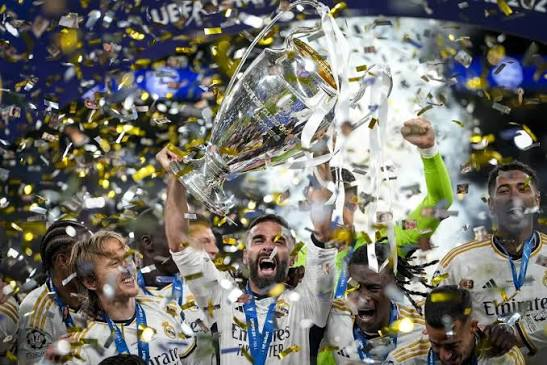
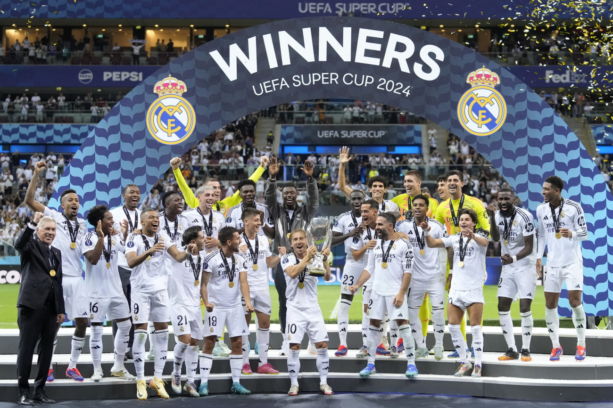
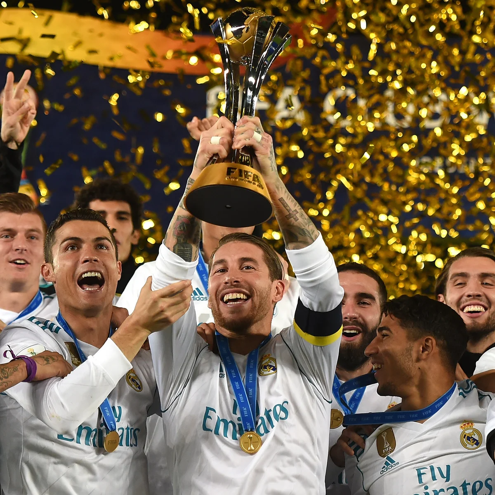
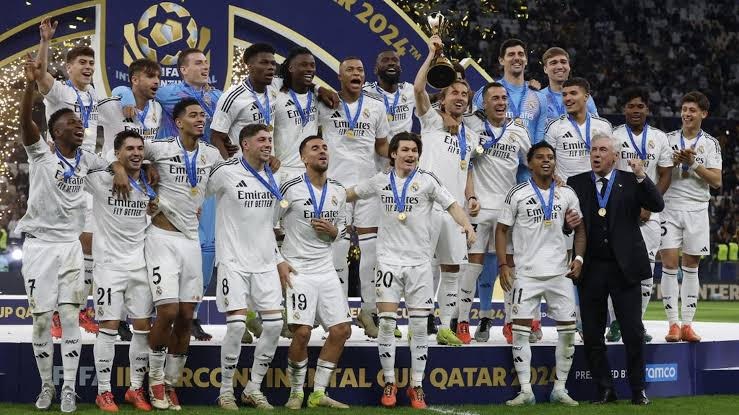

Trófeák
A legfontosabb címek nemzetközi és spanyol sorozatok szerint.
Nemzetközi sorozatok

15
Bajnokok Ligája / BEK
Európa legrangosabb klubtrófeája, amelynek az első kiírás óta a Real a legsikeresebb csapata.
1956–60, 1966, 1998, 2000, 2002, 2014, 2016–18, 2022, 2024
6
UEFA-szuperkupa
A Bajnokok Ligája és az Európa-liga győztesének párharca.
2002, 2014, 2016, 2017, 2022, 2024
5
FIFA Klubvilágbajnokság
A kontinensek legjobb klubcsapatainak világversenye.
2014, 2016, 2017, 2018, 2022
4
Interkontinentális kupa
Az európai és a dél-amerikai bajnok csapat összecsapása.
1960, 1998, 2002, 2024
2
UEFA-kupa
Az Európa-liga elődje.
1985, 1986Spanyol sorozatok

36
La Liga
A spanyol első osztály; a Real a legtöbbször bajnok klub.
Legutóbb 2023–24
20
Copa del Rey
A spanyol kupa, amelyet 1903 óta rendeznek.
Legutóbb 2022–23
13
Supercopa de España
A bajnok és a kupagyőztes (újabban négy csapat) párharca.
Legutóbb 2023–24
1
Copa de la Liga
Az 1980-as években rendezett Ligakupa.
1985